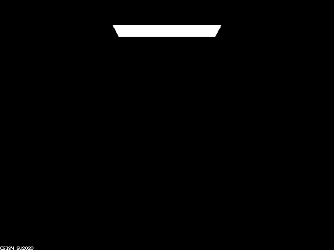
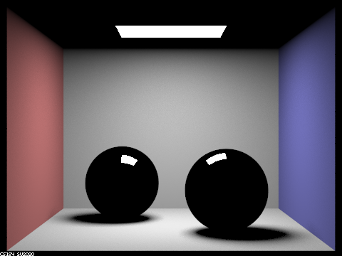
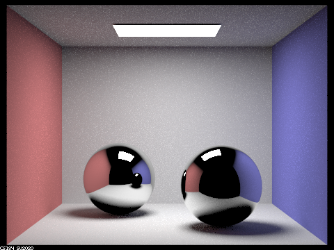
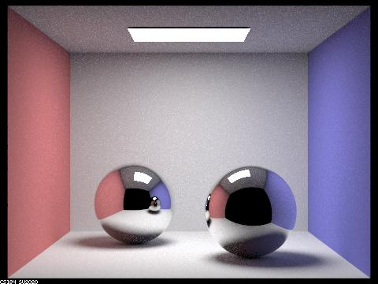
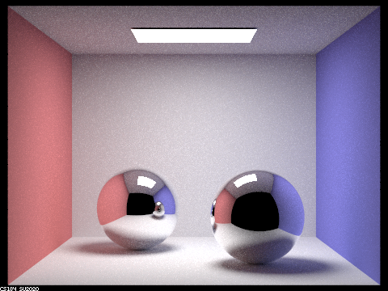
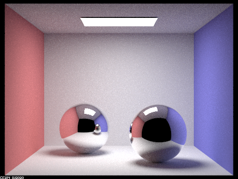

CS184 Project 3-2
Matthew Tang, Kaitlyn Lee
https://cal-cs184-student.github.io/sp22-project-webpages-kaitlynlee/proj3-2/index.html
Part 1
In Part 1, we implemented code to support reflection and refraction for glassy materials. Below is the renders for depths 0, 1, 2, 3, 4, 5, 100.




 

At depth 0, we just only see the light source which is to be expected. At depth 1, we see the first bounce which bounces on the walls of the room. The spheres only show black with a bit of white from the light source since there is only a single bounce of reflection/refraction from the light source. At depth 2, the spheres now show reflection/refraction from the walls and surrounding objects since it has the second bounce. The reflection in the sphere contains the other sphere which is dark still until depth 3. The differences between depths 4, 5, and 100 are hard to notice by the naked eye due to their very small contributions, but generally the pictures are slightly brighter due to the extra bounces added.